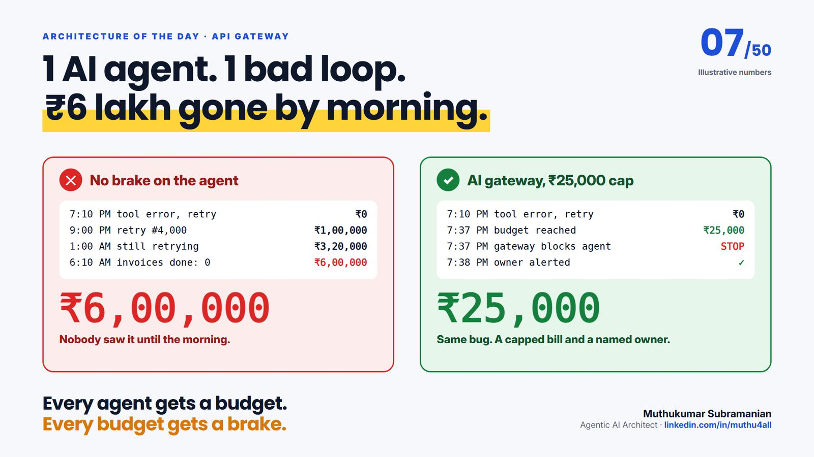

One AI Agent. One Bad Loop. ₹6 Lakh Gone by Morning.
By Muthukumar Subramanian · Agentic AI Architect

It's 7:10 on a Friday evening, month-end. Your reconciliation agent calls a vendor lookup tool. The tool returns an error. The agent does what it was told: it tries again.
And again. And again.
Nobody's watching. Everyone's gone home. Each retry sends the whole growing conversation back to the model, so each one costs more than the last.
At 6:10 the next morning, somebody opens the cloud console. The bill for the night is ₹6 lakh. The agent reconciled zero invoices.
(That story is illustrative, and so are the numbers. But ask around. Nearly every team running agents has a smaller version of it.)
Your API gateway saw all of it and did nothing, because it's counting the wrong thing.
The architecture today
An API gateway sits between the outside world and your services. Every request passes through one front door, where it gets authenticated, rate-limited, routed and logged. It's why a traffic spike doesn't flatten your backend.
It was built for a world where one call costs roughly the same as the next. So it counts requests. A thousand a minute, fine.
Agents broke that. One call can be 200 tokens or 200,000. The gateway sees a healthy request. Finance sees the bill a month later.
👉 [IMAGE: A-day07-2-in-article-architecture.png]
Caption: The AI gateway sits beside the API gateway you already have. Grey is existing. Amber is new.
Where AI plugs in now: an AI gateway
Keep your API gateway. Add a second front door for one job: everything going to a model passes through it.
→ A budget per agent. Not per team, not per company. The reconciliation agent gets ₹25,000 a day. When it's gone, requests stop and the owner gets a message.
→ Token rate limits. Count tokens, not requests.
→ Model routing. Simple tasks go to a small cheap model, hard ones to a large model. If one provider goes down, traffic moves to another.
→ PII masking. Names, phone numbers and account numbers are stripped before the prompt leaves your network.
→ A cost ledger. Every call is tagged with the agent, the task and the owner. Now you can answer "what did that agent cost us yesterday, and what did it do?"
The first, low-risk step doesn't touch a single agent's logic. Point one agent at the gateway instead of straight at the model. Log for a week. Then switch on the budget.
Where it's heading with agents
In two or three years, I think the AI gateway becomes the finance department for your agents.
Every agent will have a named owner, a monthly budget and a cost per finished task. An agent that wants more spend will have to show what it delivered, the same way a team does. Gateways will also start governing tool calls, not only model calls, because a loop that hammers your payment API can do far worse damage than one that burns tokens.
The real question moves from "which model?" to "who approved this agent's spending limit, and who gets the call when it hits it?"
That's already creating new jobs. Someone has to own the caps, and you'll see that person called an AgentOps engineer or an AI Agent Manager (the titles are still settling). Someone also has to set them for the real work. That's often a forward deployed engineer (FDE): an engineer who sits with the customer's team and ships the agent on their real systems. Only a person in that room knows month-end reconciliation legitimately costs ten times a normal Tuesday.
👉 [IMAGE: A-day07-3-in-article-gateway-compare.png]
Caption: Your API gateway counts requests. An AI gateway counts rupees.
Watch it work
Same bug, same night, two outcomes.
👉 [GIF: A-day07-4-in-article-overnight-meter.gif]
Caption: The spend meter overnight. On the right, the gateway stops the agent at its cap. All numbers illustrative.
Pros
→ A bad loop costs you a capped amount instead of an open-ended one
→ One place to mask personal data, switch models and see cost per agent
→ Switching providers becomes a config change, not a code change
Cons
→ One more component in the path of every call, which adds latency and a new thing that can fail
→ A hard stop can kill a legitimate month-end run, so someone has to set limits thoughtfully and be reachable
→ The gateway sees tokens, not intent. It can't tell a bad loop from a big job. Your agent runtime still needs its own step limit
The opportunity
Any company using more than one model, or running more than a handful of agents, will need this. Most won't build it well themselves.
That's the market: AI gateways, and the cost discipline around them. The buyers are CFOs who've just seen their first surprise AI bill and CISOs who want one place to enforce masking. For product companies, that's a gateway with agent-level budgets and chargeback reports. For integrators, it's a repeatable service: audit the AI traffic, route it through a gateway, set budgets per agent, and hand finance a monthly cost-per-task report.
And there's a career in it. An FDE who can walk into a finance team, map the workflow and set sensible caps is hard to find. Indeed data reported in the Indian press shows FDE job postings in India up nearly 19-fold from June 2025 to June 2026. That's a fast rise from a small base, but the direction is hard to miss. Pair that with an AgentOps owner on the inside, and the agent finally has someone answerable for its bill.
Tools to try
LiteLLM for virtual keys with budgets per key · Azure API Management, whose token-limit policy sets token quotas and rate limits · Kong AI Gateway if you already run Kong, with token-based rate limiting through its AI rate limiting plugin · Cloudflare AI Gateway for caching, rate limits and cost logs. Check each one's current plan, because features vary by tier.
Your turn 👇
When an agent hits its budget at 2 AM: hard stop, or let it run and alert someone? Pick one.
Tag the person in your company who'd get the call about a ₹6 lakh overnight bill.
Day 7 of 50 · follow along. Tomorrow: The agent mesh. When two agents disagree, who's responsible?